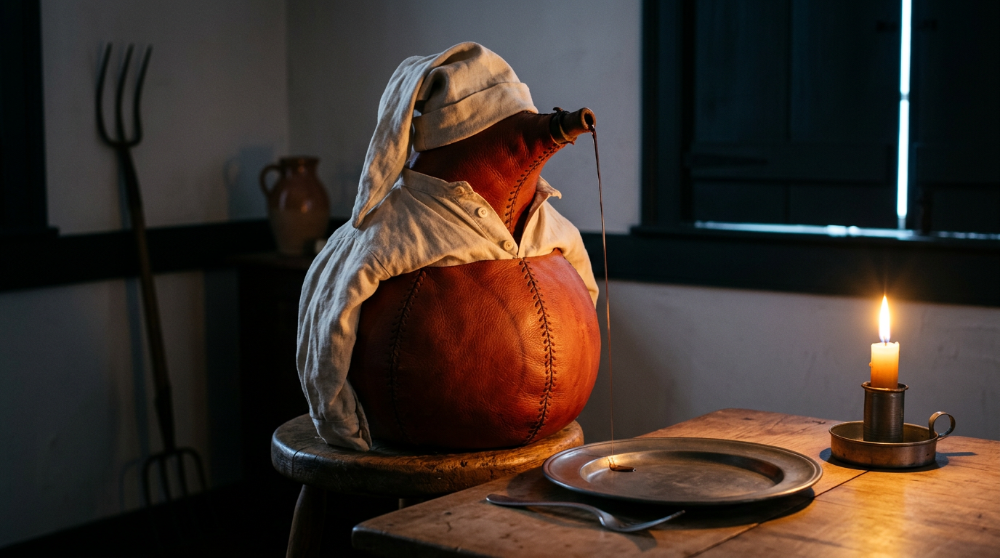

Epidemias de Vampiros: La Historia Real de los Pánicos de los No-Muertos
Los Muertos No Contagiaban Nada Más Que Rumores: Guía de Campo de las Epidemias de Vampiros de Yorkshire, Serbia, Moravia y Rhode Island
Cerrá los ojos e imaginá un vampiro. Dale, que yo espero.
Capa. Pómulos. Un acento de ninguna parte, una rutina de skincare que cuesta más que tu auto, y un interés profundo y fatal en tu cuello. Bela Lugosi pasado por el Conde Drácula de los cereales, aprobado por cada adolescente que sobrevivió una saga de Twilight.
Ahora abrí los ojos, porque estás equivocado. Buena persona, pésimo para adivinar.
Los primeros vampiros que el mundo occidental se tomó en serio eran campesinos serbios gorditos y rubicundos, semanas bajo tierra, con sangre fresca en las comisuras de la boca, con el aspecto de Jack Black después de la noche de langosta a la carta. Y los que los certificaron no eran aldeanos con antorchas. Eran cirujanos militares. Con nombramiento. Y un informe firmado.
Confesión: los vampiros nunca me asustaron. Ni una sola vez. En algún punto de Entrevista con el vampiro, mientras la mayoría de mi generación se escondía detrás de un almohadón, yo era el raro que quería ser Lestat. Quería SER él. Lo que, si viste Lo que hacemos en las sombras, me convierte en Guillermo: el familiar que va a hacerle los mandados a los vampiros por años con la esperanza de que alguien finalmente lo muerda. Sí. Lo acepté. Más o menos.
Esta es la historia de las epidemias de vampiros. Los historiadores llaman al capítulo habsburgo la controversia vampírica del siglo XVIII. Internet la llama la Gran Epidemia de Vampiros. Como sea, empezó en un monasterio de Yorkshire, pegó un giro brusco hacia Serbia habsburga, fue cerrada por una Emperatriz con una pluma, y después, lo juro por todo lo que tengo, apareció en Rhode Island en 1892… una década completa después de que un médico alemán llamado Robert Koch identificara la bacteria de la tuberculosis.
Servite algo marrón. Vamos a cavar.
¿Qué Eran las Epidemias de Vampiros?
Una epidemia de vampiros es un racimo de muertes en una comunidad que los sobrevivientes le adjudicaron a un vecino recién enterrado, seguido de una exhumación, una estaca, un fuego y, en los mejores casos, papeleo. Las hubo en la Inglaterra medieval, una isla griega en 1701, la Serbia habsburga en las décadas de 1720 y 1730, Moravia en la de 1750, y en la Nueva Inglaterra rural hasta 1892.
El hilo en común no es Transilvania. No son las capas. Es una enfermedad que nadie podía explicar y un cadáver que nadie podía dejar de mirar.
Vampiros Medievales: Un Monje de Yorkshire con un Problema de Fantasmas
Alrededor de 1198, un canónigo agustino llamado William of Newburgh se sentó en Yorkshire a terminar una historia de Inglaterra desde 1066 en adelante. Se enorgullecía de sus fuentes confiables. Era un tipo sobrio. No el tipo del que esperarías que se fuera de cauce.
Entonces, en el Libro V, entre los reyes y las cruzadas, para todo el circo para contarte sobre los muertos caminando por Gran Bretaña.
Un hombre de Buckinghamshire muere y sigue volviendo a ver a su viuda. Un obispo interviene y el marido se queda bajo tierra. Eso es asesoramiento matrimonial medieval. En Berwick y Alnwick los muertos caminan y sigue una plaga, William los vincula, y los aldeanos responden como siempre respondieron los aldeanos… con una hoguera.
Política de salud pública medieval, en una oración: ante la duda, prendele fuego.
La palabra “vampiro” no llegaría al inglés por más de quinientos años. William nunca la usa. Sus revenants no la necesitan. Ya están haciendo el trabajo: muertos, locales, culpados por los enfermos.
Una Parada Rápida en Mykonos, 1701, Donde el Vampiro Tomó Todo Menos Sangre
Mucho antes de que Mykonos se convirtiera en el lugar donde perdés las sandalias y la dignidad, un botánico francés llamado Joseph Pitton de Tournefort pasó por ahí y vio a una isla entera perder la cabeza por un muerto que no quería quedarse quieto.
Los lugareños decían que el tipo salía de noche a romper puertas, rasgar ropa y, lo peor de todo, vaciar todas las botellas de la casa. Tournefort decidió que era el diablo más sediento del Egeo. El pueblo dijo una misa y puso al carnicero, un viejo torpe, a cargo de sacarle el corazón. El olor era tan nauseabundo que Tournefort anotó que la multitud insistía en que no olía a nada. Quemaron el corazón en la orilla. No funcionó. Después, el Año Nuevo, quemaron el cadáver entero en lo que el botánico llamó una hoguera de alegría. La aparición paró.
Fijate lo que falta. Ni una gota de sangre. Los primeros vampiros no querían tu sangre. Querían tu vino, tu sueño y tu paz. Lo que, honestamente, los hace compañeros de departamento.
Kisiljevo, 1725: Nueve Muertos en Dos Días y un Vecino Muy Conveniente
Ahora llegamos a Serbia, y esto se va a poner cargado de papeleo.
Petar Blagojević era un campesino en Kisiljevo, un pueblo a orillas del Danubio en la franja de Serbia que los habsburgos le habían sacado a los otomanos en 1718. Murió en 1725 y fue enterrado con la ceremonia eclesiástica de rigor. Los escribientes austriacos escribieron su nombre Peter Plogojowitz, porque los escribientes austriacos escribían nombres serbios como uno escribe el nombre de su ex en un mensaje borracho.
En poco tiempo, nueve aldeanos murieron en dos días. Cada uno dijo, antes de irse, que Petar los había visitado de noche y los había estrangulado.
Nadie en Kisiljevo dijo, “Nueve en dos días, ¿no habrá que revisar el pozo?” Dijeron, “Revisemos a Petar.”
Los vecinos querían desenterrarlo. Llegó un funcionario habsburgo a encontrar la tumba ya abierta y quedó pasmado con lo que vio: un cuerpo que, según los estándares locales, tenía todas las credenciales de vampiro. Había sangre en la boca y la nariz cuando entró la estaca. Lo quemaron. Las muertes dejaron de reportarse. Un informe oficial, con la palabra vampir, subió por la cadena de mando.
Doscientos kilómetros más lejos, otro pueblo estaba a punto de hacer lo mismo, y esta vez todo el continente iba a leerlo.
Medveđa, 1726 a 1732: El Informe Que Se Viralizó Antes de Que Existiera el Viral
Acá es donde se pone bueno, y por bueno quiero decir que no podrías inventarte esto aunque te pagaran por palabra.
Arnold Paole, un miliciano serbio, les cuenta a sus vecinos que un vampiro lo persiguió en territorio otomano. Su remedio: comer tierra de la tumba del vampiro y untarse con su sangre. Es el peor batido en la historia documentada. Después, hacia 1726, se cayó de un carro de heno y se rompió el cuello.
El universo odia a los listillos con carritos de heno.
Veinte o treinta días después, cuatro aldeanos se quejaron de que Paole los visitaba de noche. Los cuatro murieron. A los cuarenta días del entierro, los vecinos lo desenterraron. El informe dice que sangre fresca le había corrido por los ojos, oídos y nariz, y que las uñas y la piel viejas se habían caído, con unas nuevas debajo. Le clavaron una estaca. Gimió. Sangró. Le cortaron la cabeza y lo quemaron.
Y eso fue el acto de apertura.
Cinco años después empieza de nuevo. Para enero de 1732, diecisiete personas habían muerto en tres meses, entre ellas jóvenes y sanos. Los síntomas: dolores punzantes en el costado, dolor de pecho, fiebre larga, miembros que se sacudían. El pueblo culpó a dos mujeres, Milica y Stana. Y culpó a la carne. Milica había comido ovejas que el equipo de Paole, los “vampiros anteriores”, había matado. Esa era la teoría de transmisión de los aldeanos: sos lo que comés, y lo que comiste lo mató un fantasma.
Las autoridades locales, temiendo la peste, llamaron a un médico imperial de contagios, Martin Glaser, que examinó el pueblo en diciembre de 1731. Después el ejército mandó una comisión más grande, encabezada por un cirujano de regimiento llamado Johannes Flückinger, que llegó el 7 de enero de 1732. Cavaron. Cortaron. Escribieron. Más de una docena de los cuerpos resultaron “vampiros” según los estándares del momento (las fuentes discrepan entre trece y dieciséis, y yo no soy ningún Sherlock Holmes para zanjar la diferencia).
El informe, Visum et Repertum, “Visto y Hallado”, fue publicado en Núremberg ese mismo año y recorrió Europa como un fósforo mojado en un granero seco. Para 1734 la palabra “vampiro” había llegado al inglés.
Leelo de nuevo. Cada película de vampiros que viste en tu vida es fanfiction de un trámite médico militar. Drácula, Lestat, Edward Cullen, cada chico triste en un saco de terciopelo en Lo que hacemos en las sombras… todos descienden de la tarea de un cirujano de regimiento. Guillermo incluido, bendito sea.
Lo Que Los Cirujanos Realmente Vieron (Spoiler: La Muerte Tiene Muy Mala Prensa)

Acá está la parte que hace que los hombres adultos dejen el vaso.
Casi todo lo que reportaron los cirujanos es lo que hace un cadáver. El folklorista Paul Barber pasó años en esto y concluyó que el folklore vampírico es una hipótesis popular elaborada, una manera de explicar cosas perfectamente naturales que les pasan a los muertos. Los cuerpos se hinchan, lo que hace que el cadáver parezca gordo y bien alimentado. Sangre y líquidos pueden aparecer en la boca y la nariz. La piel y las uñas se desprenden, y si nunca lo viste, la capa de piel de aspecto fresco que queda debajo se lee como “nueva”. El frío enlentece todo el proceso. Y un cuerpo puede hacer ruidos cuando le clavás una estaca, porque es una bolsa de aire y líquido, y la estaca no es delicada.
No soy ningún Quincy, así que leé a Barber, pero el resumen es este: los aldeanos no estaban alucinando. Miraban la descomposición normal y sacaban la conclusión equivocada.
Hay una segunda capa, y es más difícil de reírse. Un neurólogo español llamado Juan Gómez-Alonso propuso en 1998 que la rabia podría explicar algunos casos: la agitación nocturna, las mordidas, la aparente muerte y el retorno. Otros investigadores propusieron otras enfermedades para otros brotes. Nada encaja en todos los casos, y nadie podrá probarlo nunca, porque la evidencia es un montón de tumbas quemadas.
STOP.
Pará el auto. Balizas puestas. Bajate del auto.
Estabas asintiendo convencido de que esto era un asunto de campesinos balcánicos. Esa gente. En aquella época. Allá lejos. Es el equivalente intelectual de un sticker que dice CONVIVAMOS en la luneta de una camioneta que le pisa la cola a un utilitario.
Esperá, porque estoy a punto de cruzar el cantero.
Pensabas que iba a la izquierda y estoy llevando todo el auto al otro lado del Atlántico como los Duke Boys sobre un arroyo, bocina a fondo… Próxima parada: Rhode Island. En el siglo XIX. Después de la Guerra Civil. Después del telégrafo. Después de la teoría de los gérmenes.
Rhode Island, 1892: Los Muertos No Se Enteran de en Qué Siglo Están
En el 1800, la tuberculosis, que la gente llamaba consunción, arrasó familias enteras de Nueva Inglaterra. Se llevaba a la madre, después a la hija mayor, después al siguiente, y nadie podía explicar por qué saltaba de uno a otro. Entonces la explicación popular era: el primero en morir está drenando a los demás. Desenterrá a los muertos. Si el cuerpo parece anormal, quemá el corazón, a veces el hígado, y hacé que el pariente enfermo tome las cenizas en agua.
Una investigadora llamada Diana Ross McCain contó dieciocho exhumaciones documentadas de este tipo en Nueva Inglaterra en los siglos XVIII y XIX. Thoreau mencionó una en su diario de 1859. No era algo marginal. Era una práctica médica regional.
Voy a bajar los chistes un minuto. Mercy Brown tenía diecinueve años.
Vivía en una granja en Exeter, Rhode Island. George Brown, su padre, ya había enterrado a su esposa, Mary Eliza, y a una hija, Mary Olive. Su hijo Edwin estaba enfermo. Mercy se enfermó y murió el 19 de enero de 1892. Los vecinos querían desenterrar los cuerpos, y George, que no creía en la teoría, dio un sí a regañadientes.
El 17 de marzo de 1892, en el Cementerio de Chestnut Hill, abrieron tres tumbas. La madre y la hermana, diez años bajo tierra, eran huesos. Mercy, dos meses muerta en un invierno de Rhode Island, parecía intacta, y todavía había sangre en su corazón. Un médico estaba presente y dijo que era tuberculosis. Los vecinos no compraron eso. Le sacaron el corazón, lo quemaron sobre una roca cercana, mezclaron las cenizas en agua, y Edwin tomó la mezcla.
Murió el 2 de mayo de 1892.
Eso fue diez años después de que Robert Koch anunciara que había identificado la bacteria que causa la tuberculosis. La cura ya estaba en camino. El ritual solo llegó primero.
La Emperatriz Que Le Prohibió la Entrada a los No-Muertos
De vuelta en Europa, el pánico tuvo un final muy específico, muy definitivo, y vino de una mujer con una pluma.
En 1755, en un pueblo llamado Hermersdorf en Moravia, sacaron un cadáver por un agujero en la pared del cementerio con un gancho en una soga, le cortaron la cabeza y lo quemaron afuera. Cuando la Emperatriz María Teresa se enteró, mandó dos médicos de la corte a investigar. Después le preguntó a su médico personal, un holandés llamado Gerard van Swieten, qué estaba pasando.
Van Swieten concluyó que los “vampiros” eran producto de enfermedades epidémicas con fiebres y alucinaciones. El 1° de marzo de 1755, la Emperatriz emitió un decreto: no más profanación de tumbas en nombre de la defensa vampírica, y los reportes de vampirismo pasaron a la censura. Metió a los vampiros en la misma bolsa que la caza de brujas, la adivinación y la búsqueda de tesoros. Una mujer que había parido dieciséis hijos no estaba dispuesta a que la intimidara un cadáver.
Hay una teoría de larga data de que van Swieten fue el modelo para Van Helsing en Drácula. Es plausible, es una buena historia, y apostaría mi último Alfajor a que es puro vibes. Tratala como una leyenda con buen peinado.
La Auto-Refutación: Quizás los Aldeanos Tenían Razón en Algo
Antes de que te des una palmadita en la espalda, acá está el argumento contra la versión engreída de este post.
Primero, “era solo descomposición” es demasiado prolijo. La gente se moría. Nueve en dos días en Kisiljevo. Diecisiete en tres meses en Medveđa. Las autoridades llamaron a un médico de contagios porque temían la peste. El vampiro no se equivocaba en que algo se estaba contagiando. Se equivocaba en qué.
Segundo, los aldeanos no eran idiotas histéricos. Tenían una hipótesis (los muertos drenan a los vivos), una prueba (abrí la tumba y mirá) y un tratamiento (estaca, fuego, cenizas). El protocolo falló porque la hipótesis era incorrecta, pero su forma es reconocible. Es lo que hacen los humanos cuando no pueden ver el germen.
Tercero, la versión famosa de Mercy Brown es más delgada que la leyenda. Los historiadores que revisaron el rastro documental de Exeter encontraron que mucho de lo que “sabemos” sobre ella fue escrito después del hecho, y los detalles son escasos. Conté su historia directo. No la adorné.
Cuarto, la rabia, la carne en mal estado, la pelagra, la tuberculosis: cada una encaja en un caso y se rompe en el siguiente. No soy patólogo. Nadie puede decir “caso cerrado” sobre un montón de tumbas quemadas.
Quinto, el pánico mismo puede ser una historia. El famoso pánico radial de 1938 fue inflado por los diarios que lo reportaron, y yo no soy sociólogo, así que asumí que algo de lo que nos llegó sobre los pánicos vampíricos también fue inflado en el camino. Las muertes eran reales. Qué tan asustados estaban todos es lo único que no puedo medir.
En algún lugar hay un cementerio, una linterna, y una estaca clavada a través de un montón de papeleo, con un sello de lacre rojo chorreando por el costado como la escena del crimen más burocrática del mundo.
Así es como murieron los vampiros, dicho sea de paso. No con ajo. No con un crucifijo. Con un decreto, una mejor explicación y un sello.
Que descanses bien.
Preguntas Rápidas Desde el Gallinero
¿Fueron reales las epidemias de vampiros?
Las muertes eran reales. Los vampiros no. Comunidades de la Inglaterra medieval, la Serbia y Moravia del siglo XVIII, y la Nueva Inglaterra del siglo XIX sufrieron racimos de enfermedades y culparon a un vecino recién muerto.
¿Dónde empezó el pánico vampírico?
Los brotes mejor documentados están en la Serbia habsburga, en Kisiljevo en 1725 y en Medveđa en 1731 y 1732, donde cirujanos militares austriacos escribieron los informes que llevaron la palabra “vampiro” por toda Europa.
¿Quién fue Arnold Paole?
Un miliciano serbio que dijo haberse curado una mordida de vampiro con tierra de tumba y sangre, murió hacia 1726 al caerse de un carro de heno, y fue desenterrado cuarenta días después por vecinos que decidieron que era un vampiro.
¿Quién fue la última persona acusada de vampiro en América?
Mercy Brown, de Exeter, Rhode Island, exhumada en marzo de 1892, es el caso mejor documentado y el más conocido de Nueva Inglaterra.
¿Qué causa realmente las “señales” vampíricas en un cadáver?
La descomposición natural: hinchazón, fluidos en la boca y la nariz, desprendimiento de piel y uñas. También se propusieron explicaciones médicas como la rabia para algunos brotes, aunque ninguna encaja en todos los casos.
¿Alguien detuvo la caza de vampiros?
Sí. En 1755, la Emperatriz María Teresa prohibió la profanación de tumbas en nombre de la defensa vampírica, después de que su médico Gerard van Swieten investigara el asunto.